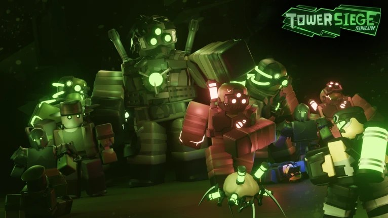
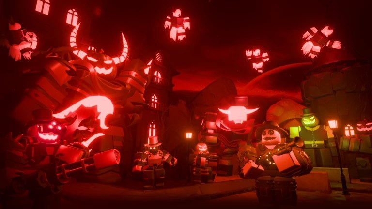
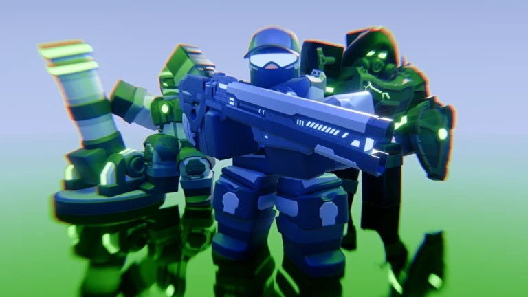

Tower Siege Simulator
- Вид работы: игра на Roblox
- Год: 2023
- Роль: программист, проектирование систем

О чём
Команда студии Radixant Interactive делала tower defense для Roblox. Игра вдохновлена другими играми этого жанра на платформе, поэтому игрокам нужны знакомые и понятные механики: расстановка юнитов, волны врагов, награды.
Над проектом работала небольшая команда, и системы нужно было сделать так, чтобы их можно было развивать обновлениями, например сезонными событиями.
Моя роль
Я писал код и проектировал игровые системы. Сначала мы определяли, что должна делать каждая механика, потом я разделял её на небольшие части, которые можно менять независимо друг от друга.
Такой подход помогает команде добавлять новое без переписывания старого. Например, в игре есть тематические события вроде Хэллоуина, и для них не нужно заново строить основу.


Результат
Игра опубликована на Roblox и продолжает обновляться командой. В ней есть сезонные события и дополнительные награды для подписчиков Premium.